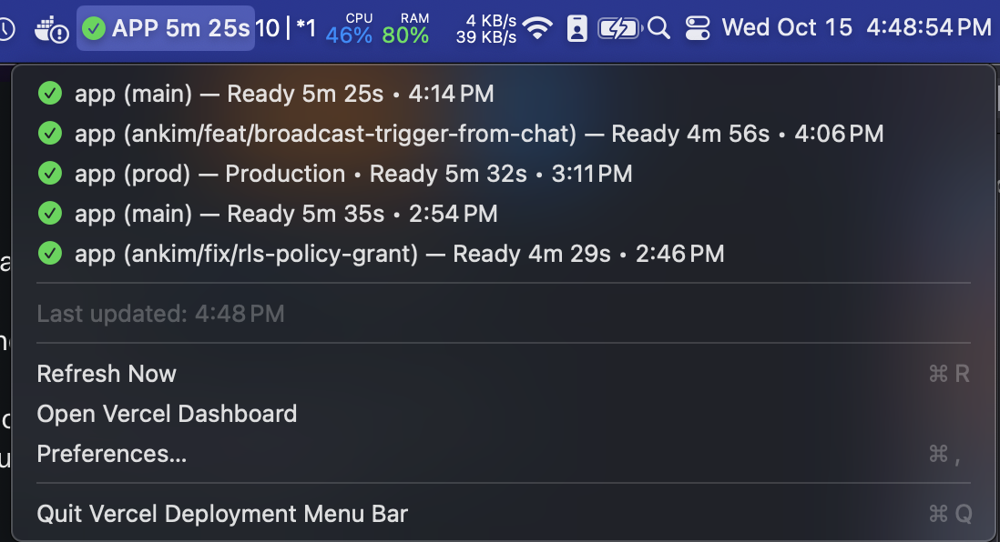

Vercel & Cloudflare deploy status in your Mac menu bar
Deploylight is a free, open-source menu bar app for macOS. See Vercel deployments and Cloudflare Workers Builds in one list as they build, succeed, or fail.

Features
Real-time Monitoring
Polls your providers and updates the menu bar icon as deployments build, succeed, or fail. It checks faster while a build is running.
One List, Multiple Providers
Vercel deployments and Cloudflare Workers Builds appear together, newest first. Use either provider or both.
Filters
Pick teams, projects, accounts, and Workers, and filter by branch, production/preview, and deployment state.
Lightweight & Native
Built with Swift and SwiftUI. Code-signed and notarized, with minimal resource usage.
How to Get Started
1. Download and Install
Download the latest release, unzip it, and move Deploylight to your Applications folder.
2. Create an API Token
Vercel: create a token in Vercel Account Settings → Tokens, scoped to your personal account or a team.
Cloudflare: create a user token in My Profile → API Tokens with the account permissions Workers Builds Configuration: Read and Workers Scripts: Read.
3. Configure the App
Click the menu bar icon, select "Preferences…", and paste your token(s). Deploylight lists the teams, projects, accounts, and Workers your tokens can see, so you can pick from a list. Changes save automatically.
Requirements
- macOS 13.0 or later
- A Vercel API token and/or a Cloudflare user API token (free to create)
Open Source
Deploylight (formerly Vercel Deployment Menu Bar) is open source under the MIT License. View the source code, report issues, or contribute on GitHub.